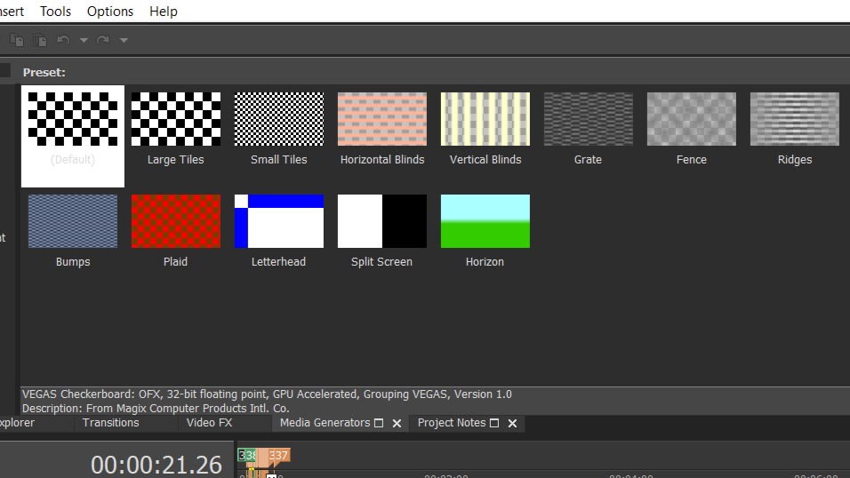
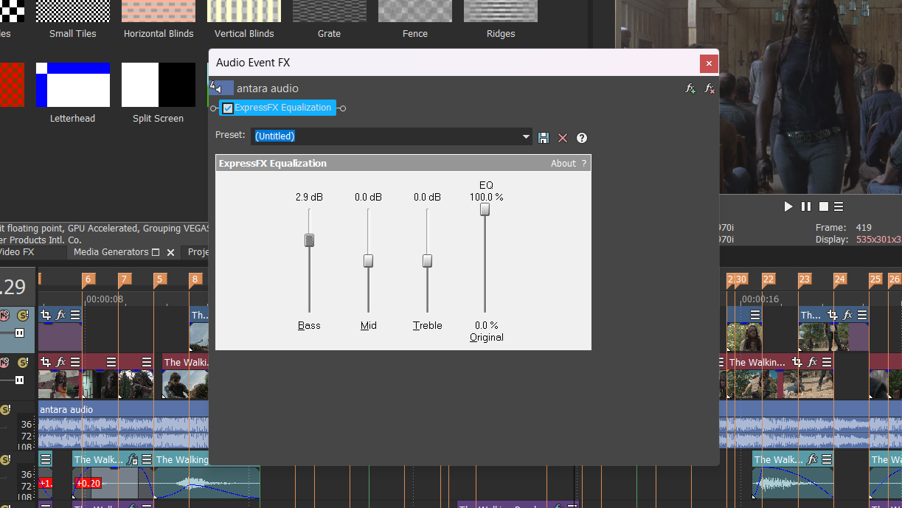
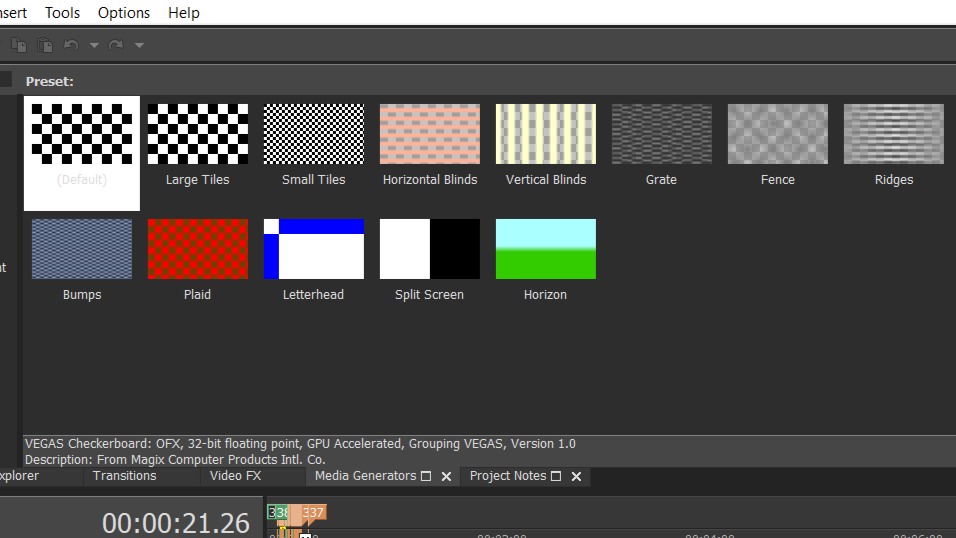
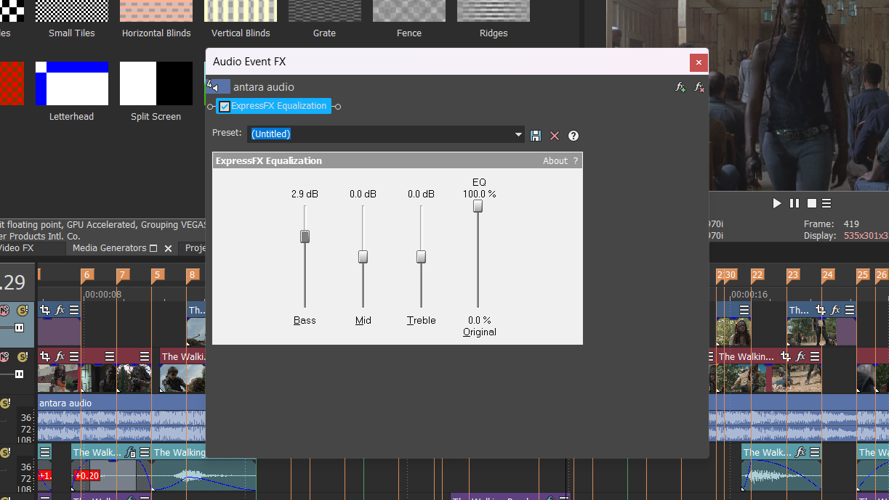

This editing application is what I used to get the bare bones structure
of my edit in order. This is often referred to as "cutting clips," but to
be specific it's the part where I edit the audio, select clips I want to
use, and start imagining my transition ideas.
It's not necessary to use an entire different program for these purposes,
however I find Vegas Pro to be more beneficial because of its ability to
adjust to frame rates and sample rates, and the accuracy/adjustability of
audio settings.
Though it's not my favorite part of the editing process, Vegas Pro has
provided the ideal organized experience when it comes to planning an edit,
and I could not make my edits without it.
 


